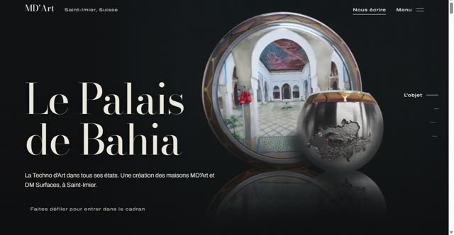
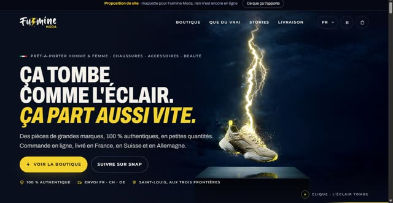
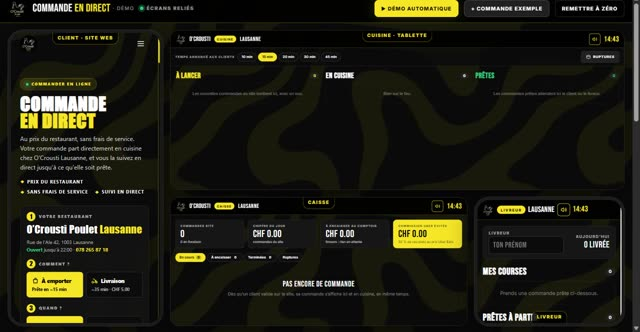
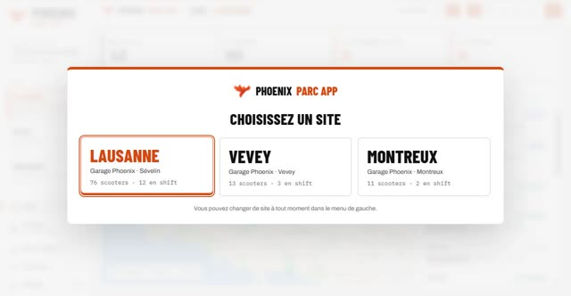

BASTION.
> bastion · intégrité 34 %
Anas Dine
Administrateur systèmes & réseaux · automatisation · IA hébergée en local
Défilez pour entrer ↓
LinkedIn : Anas Dine
> bastion · intégrité 34 %
Administrateur systèmes & réseaux · automatisation · IA hébergée en local
> bastion · fin de la plongée · [ OK ]
Depuis juin, ça ne s'arrête pas : chaque mois, des outils et des réalisations de plus. Tout ce qui suit existe et s'ouvre.

Site · octobreLe Palais de Bahia
Site · octobreFulmine Moda
Commande en ligne · octobreO'Crousti Lausanne
Application · octobrePhoenix ParcUn jeu phare et treize bornes, écrits pour ce portfolio. Tout tourne dans votre navigateur.